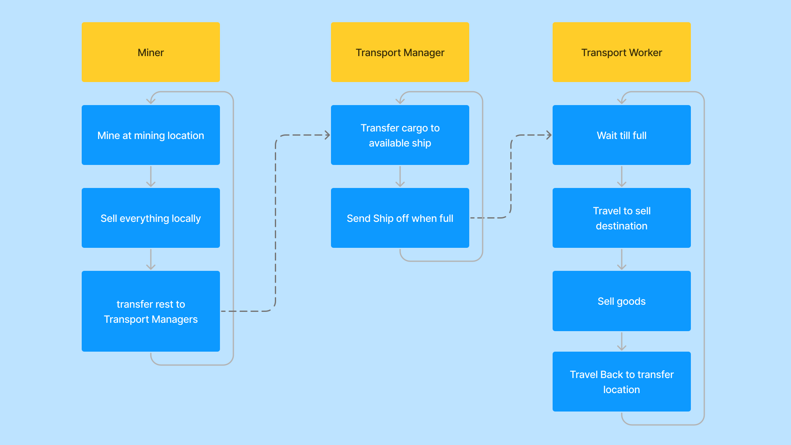
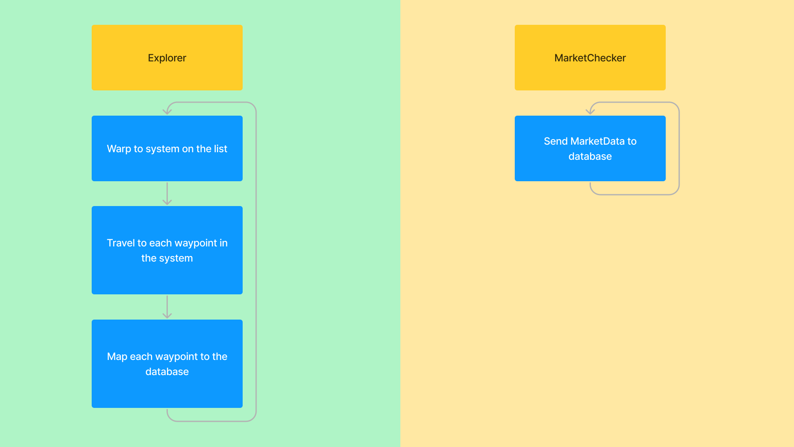
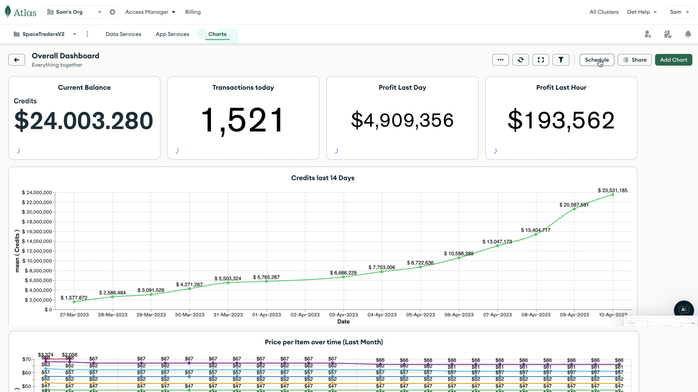
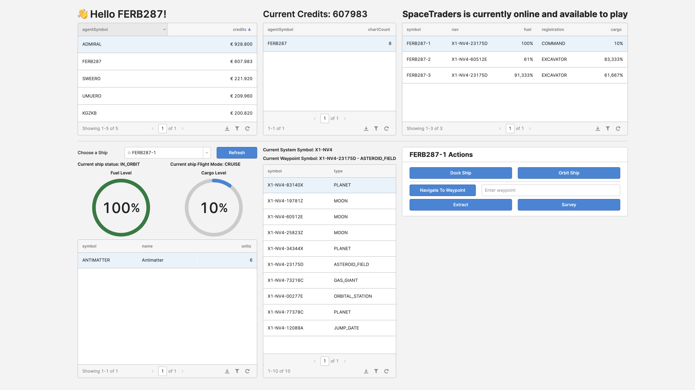

Space Traders
SpaceTraders is an API based game where you can use any language and any tool to interact with it. You can learn a new language or learn how to make UI and still have a meaningful impact on the game world. When I stumbled upon this project, I was immediately hooked and used it to brush up my python skills. Later on, I used MongoDB and their Charts component to dive into the data that i was creating and to learn from that data to optimize my strategy in the game.
Tools
- Sublime Text Editor
- MongoDB
Skills
- Python programming
- Databases and structures
- AI
The game
SpaceTraders is a headless API and fleet-management game where players can work together or against each other to trade, explore, expand, and conquer in a dynamic and growing universe. Build your own UI, write automated scripts, or just play the game from the comfort of your terminal. To interact with the game in the early stages, I used Postman. Very quiclky this turned out to be great for single requests but when you want to do tasks continually, you need to write a program. I wanted to make a fleetmanager that would take care of everything: The mining, selling, trading, choosing what places to trade at, finding new traderoutes,...
Fleetmanager
The fleetmanager grew from something small, a script with hardcoded "buy" and "sell" places, to a more advanced system where multiple ships are handled at once. They all mine at the same location but they sell their goods at the most optimal marketplace. To determine what marketplace was the best, I used extra ships that would just record the current marketprices at a specific location and add them to a database from which the miningships could read.
The fleet consists of a main commander ship, marketwatchers, mining drones, transport managers and transporters, system explorers and data gatherers. All managed from a single system.


Performance and limitations
To optimize the money that could be earned each hour, I was trying to make a statemachine that would eliminate many requests since there was a 2 requests/second ratelimit. To Handle all the ships at the same time I made a basic ship class and used multithreading for each ship. Each time I opened the project I would try and optimize the ship class to use less requests and make faster desicions.
Database
In order to capture current market prices and statistics about the ships and their tasks, I used MongoDB as the database behind the fleetmanager that I build. Each ship would send data when they mine goods (type of goods and amount of goods), sell goods (current price, type of goods, amount of goods), watch market prices, transfer goods to other ships,... This way, I could make a dashboard that showed me what marketplaces were best to sell each type of good, my profit each minute/hour/day, profit per ship, the amount of goods I mined and sold in each marketplace. This allowed me to easily make well-informed changes in my settings file that would dynamically update on the server my script was running on. Each day I would go back to that dashboard and update the settings file. Changing ship roles, markets, traderoutes,...
Conclusion
I stumbled upon this gem of a game and really had a blast with it. Not only was this the perfect way to refresh my python skills, I also learned a lot of new things (e.g.: multithreading). This project was the most fun because of the connection with database and trying to optimize the script each time, even if it was only by a couple of seconds. Diving deep into a sea of data, making dashboards and presenting the user (in this case: myself) with a clear view to make well-informed desicions on, this kind of work is the most energising for me.

